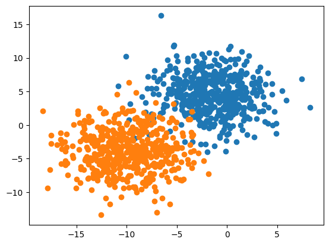
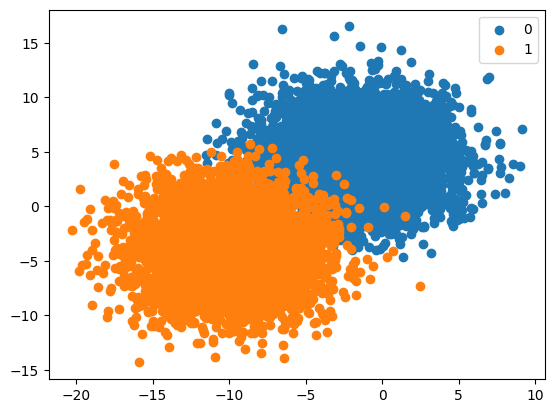
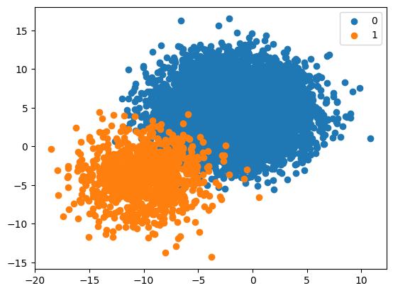
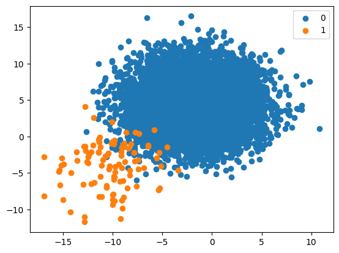
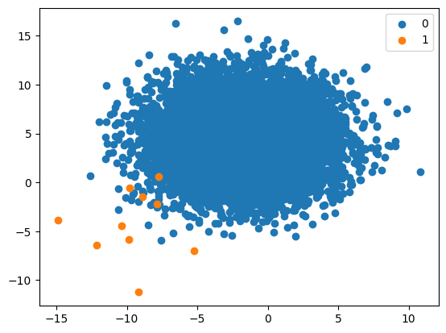
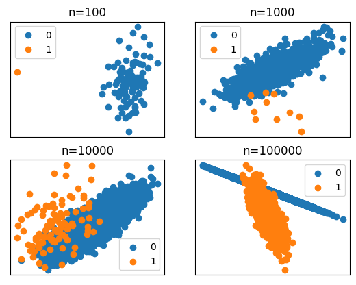
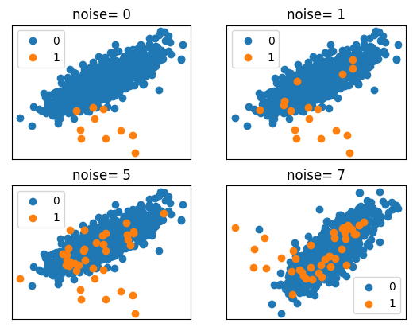
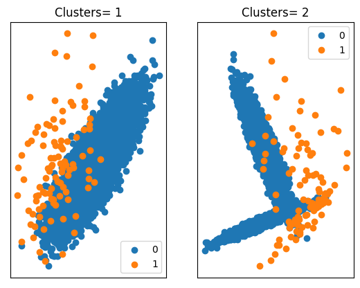

from numpy import where
from matplotlib import pyplot
from sklearn.datasets import make_blobsIntuition for Imbalanced Classification
Foundation
Create and Plot a Binary Classification Problem
X, y = make_blobs(n_samples=1000, centers=2 ,n_features=2, cluster_std=3, random_state=1)for class_value in range(2):
row_ix = where(y == class_value)
pyplot.scatter(X[row_ix, 0], X[row_ix, 1])
pyplot.show()
Create Synthetic Dataset with a Class Distribution
from numpy import unique, hstack, vstack, where
from matplotlib import pyplot
from sklearn.datasets import make_blobsdef get_dataset(proportions):
n_classes = len(proportions)
largest = max([v for k,v in proportions.items()])
n_samples = largest * n_classes
X, y = make_blobs(n_samples=n_samples, centers=n_classes, n_features=2,
cluster_std=3, random_state=1)
X_list, y_list = [], []
for k, v in proportions.items():
row_ix = where(y == k)[0]
selected = row_ix[:v]
X_list.append(X[selected, :])
y_list.append(y[selected])
return vstack(X_list), hstack(y_list)def plot_dataset(X, y):
n_classes = len(unique(y))
for class_value in range(n_classes):
row_ix = where(y == class_value)[0]
pyplot.scatter(X[row_ix, 0], X[row_ix, 1], label=str(class_value))
pyplot.legend()
pyplot.show()proportions = {0:5000, 1:5000}X, y = get_dataset(proportions)plot_dataset(X, y)
Effect of Skewed Class Distributions
1:10 Imbalanced Class Distribution
proportions = {0:10000, 1:1000}
X, y = get_dataset(proportions)
plot_dataset(X, y)
1:100 Imbalanced Class Distribution
proportions = {0:10000, 1:100}
X, y = get_dataset(proportions)
plot_dataset(X, y)
1:1000 Imbalanced Class Distribution
proportions = {0:10000, 1:10}
X, y = get_dataset(proportions)
plot_dataset(X, y)
Challenge of Imbalanced Classification
from matplotlib import pyplot
from numpy import where
from collections import Counter
from sklearn.datasets import make_classificationCompounding Effect of Dataset Size
sizes = [100, 1000, 10000, 100000]for i in range(len(sizes)):
n = sizes[i]
X, y = make_classification(n_samples=n, n_features=2, n_redundant=0, n_clusters_per_class=1,
weights=[0.99], flip_y=0, random_state=1)
counter = Counter(y)
print(f'Size={n}, Ratio={counter}')
pyplot.subplot(2, 2, 1+i)
pyplot.title('n=%d' % n)
pyplot.xticks([])
pyplot.yticks([])
for label, _ in counter.items():
row_ix = where(y == label)[0]
pyplot.scatter(X[row_ix, 0], X[row_ix, 1], label=str(label))
pyplot.legend()
pyplot.show()Size=100, Ratio=Counter({0: 99, 1: 1})
Size=1000, Ratio=Counter({0: 990, 1: 10})
Size=10000, Ratio=Counter({0: 9900, 1: 100})
Size=100000, Ratio=Counter({0: 99000, 1: 1000})
Compounding Effect of Label Noise
noise = [0, 0.01, 0.05, 0.07]for i in range(len(noise)):
n = noise[i]
X, y = make_classification(n_samples=1000, n_features=2, n_redundant=0,
n_clusters_per_class=1, weights=[0.99], flip_y=n, random_state=1)
counter = Counter(y)
print(f'Noise= {int(n*100)}, Ratio= {counter}')
pyplot.subplot(2, 2, 1+i)
pyplot.title(f'noise= {int(n*100)}')
pyplot.xticks([])
pyplot.yticks([])
for label, _ in counter.items():
row_ix = where(y == label)[0]
pyplot.scatter(X[row_ix, 0], X[row_ix, 1], label=str(label))
pyplot.legend()
pyplot.show()Noise= 0, Ratio= Counter({0: 990, 1: 10})
Noise= 1, Ratio= Counter({0: 983, 1: 17})
Noise= 5, Ratio= Counter({0: 963, 1: 37})
Noise= 7, Ratio= Counter({0: 959, 1: 41})
Compounding Effect of Data Distribution
clusters = [1, 2]for i in range(len(clusters)):
c = clusters[i]
X, y = make_classification(n_samples=10000, n_features=2, n_redundant=0,
n_clusters_per_class=c, weights=[0.99], flip_y=0, random_state=1)
counter = Counter(y)
pyplot.subplot(1, 2, 1+i)
pyplot.title(f'Clusters= {c}')
pyplot.xticks([])
pyplot.yticks([])
for label, _ in counter.items():
row_ix = where(y == label)[0]
pyplot.scatter(X[row_ix, 0], X[row_ix, 1], label=str(label))
pyplot.legend()
pyplot.show()